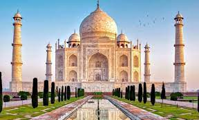

Hindistan'da gezilecek yerler
Tac Mahal, Agra
Hindistan’da gezilecek yerler listesinin başında, yeni dünya harikalarından biri olan Tac Mahal geliyor. Tac Mahal, bugüne kadar sevgi için yapılmış en etkileyici anıttır. Babür İmparatoru Şah Cihan’ın en sevdiği eşi Mümtaz Mahal’ın 14. çocuğunu doğururken ölmesinden sonra, anısına yaptırdığı saraydır. Yapımına 1631 yılında başlanan saray, 1648 yılında tamamlanmıştır. Olağanüstü bir büyüleyiciliğe sahip olan Tac Mahal, İslam ve Hint mimarisinden izler taşıyor. Beyaz mermer üzerinde sedef,akik, firuze gibi birçok değerli taş işlenerek süslenmiş. Tac mahal, günün saatine göre farklı renklerde görünebiliyor. Sabah gün doğumunda daha pembesi renge sahipken, gün içerisinde beyaz akşam ise daha parlak bir görünüme bürünüyor.
Jaipur

Jaipur, Hindistan’ın Rajatshan eyaletinin başkenti ayrıca Hindistan’da gezilecek yerler arasında en renklisidir. Rajatshan eyaletinde her şehir ayrı bir renge sahip, Jaipur’da ise tüm şehir pembeye boyanmış durumda. ‘Pembe Şehir’ olarak bilenen Jaipur bizim Hindistan’da en sevdiğimiz şehir oldu. Delhi’ye arabayla 6 saat uzaklıkta, Agra’dan 2 saat sürüyor. Jaipur’a Delhi’den uçakla gitmek en rahat alternatif. Günün her saati birçok yerel havayolu şirketinin uçuşları mevcuttur. Eğer bir tura katıldıysanız Delhi çıkışlı, Agra’ya gittikten sonra oradan arabayla devam etmek daha mantıklı olur.
Mumbai

Hindistan’ın finans merkezi olan Mumbai aynı zamanda Hindistan’ın en büyük şehridir ve Maharashtra Eyaleti’nin başkentidir. Bir de Bollywood filmlerinden de yakından tanıyoruz artık Mumbai’yi. Öncelikle, Bombay mi Mumbai mi karmaşasını netleştirelim. İngiliz sömürgecilik yıllarında şehrin ismi Bombay’miş. 1995’ten sonra Mumbai olarak değiştirilmiş. Yani şu an artık Mumbai diyoruz.